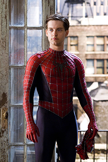
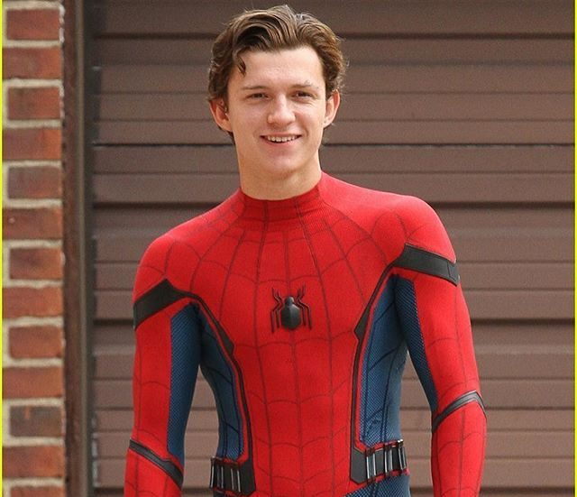

| Image | Info | Ability |
|---|---|---|
|  | Tobey Maguire's 2002 Spiderman was the first spiderman
to be in real life. He has natural web-fluid or web-shooting, also has natural wall-crawling skills from his skin. |
Superhuman Strength
Superhuman stamina Superhuman reflexes Enhanced senses Precognitive Spider-Sense Web-shooting Wall-crawling |
| |
Andrew Garfield's spiderman is undeniable one of the most
favored spiderman. He is a highschool student who likes science and experimenting stuff. Although he do not have natural web shooters, he created his own. |
Superhuman Strength
Superhuman Speed Superhuman Durability Superhuman stamina Superhuman reflexes Enhanced senses Precognitive Spider-Sense Web-shooting (not natural) Wall-crawling Acrobatics Master marksman Genius-level intellect |
|  | Tom Holland's spiderman is easily one of the strongest
among the three real life spidermans. He has alot of suits like the iron spider from iron man. He is also the only one in a group like the Avengers. |
Superhuman Strength
Superhuman Speed Web-shooting (not natural) Wall-crawling Retractable Spider wings Spider Drone Parachute Built-in Heating System |
| Miles morales' spiderman might be the most different one yet.
He has a ability of invisibility which helps him a lot in battles. He is the only one that is not named Peter Parker. |
Superhuman Strength
Superhuman Speed Web-shooting Wall-crawling Invisibility Energy Venom Blast |
|
| Gwen Stacy's spiderman is the only spiderwoman that is known.
She is from the movie Spider-Man: Into the Spider-Verse. She is best friends with Miles Morales the guy above this table. |
Superhuman Sense
Superhuman Agility Web-shooting (not natural) Wall-crawling Retractable Spider wings Gliders Perfect balance and equilibrium |